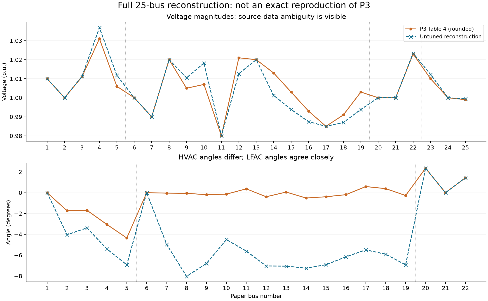
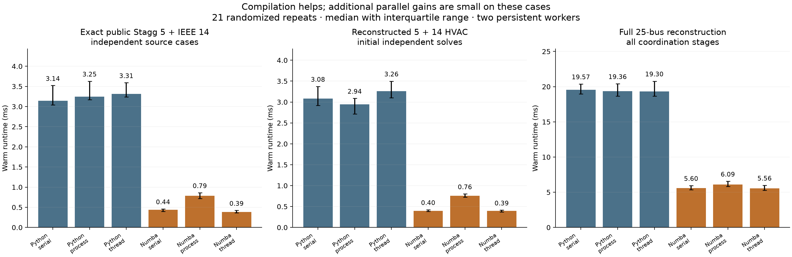

Exact paper reproduction: not achieved. The complete topology is implemented and numerically verified. LFAC values closely reproduce P3. Some HVAC and DC values differ because the complete modified input data and several modeling choices remain unresolved.
Paper: Kim, Nguyen & Santoso, A sequential power flow algorithm for multi-frequency HVac systems and VSC-HVdc systems, IJEPES 179 (2026), 112025. Original paper. Implementation and measurements:9 October 2026. No author source code was used; no message was sent to the authors.
| Public case | Python / Numba GS sweeps | Largest P/Q mismatch (p.u.) | Voltage error vs independent NR (p.u.) |
|---|---|---|---|
| Stagg 5 | 13 / 13 | 1.35e-10 | 6.96e-12 |
| IEEE 14 | 23 / 23 | 1.94e-10 | 1.60e-11 |
Stagg 5 is obtained from the official MatACDC source, which explicitly cites Stagg/El-Abiad 1968. IEEE 14 comes from PYPOWER; bus, generator and electrical branch fields exactly match the official MATPOWER case14 already downloaded. Thermal-rating fields differ and are not used by PF here. These are verified public source cases; they are not the authors' modified P3 data.
| Quantity | P3 | Reconstruction | Result |
|---|---|---|---|
| LFAC20 angle (deg) | 2.35 | 2.34986 | Close agreement |
| LFAC22 voltage (p.u.) | 1.023 | 1.023411 | Within reported rounding |
| LFAC20→21 sending P (MW) | 156.58 | 156.5752 | Within reported rounding |
| LFAC line loss (MW) | 2.03 | 2.027406 | Within reported rounding |
| HVAC8 angle (deg) | −0.06 | -8.03652 | Does not match |
| HVAC4→10 sending P (MW) | −33.97 | −10.4076 | Does not match |
| DC transmission loss (MW) | 1.83 | 2.423714 | Does not match |
All three LFAC voltage magnitudes lie within Table 4's0.001-p.u. rounding interval. The maximum LFAC branch-power difference is approximately0.006 MW/MVAr. This supports the LFAC line/control interpretation. HVAC angles differ by up to7.977 degrees, so the complete paper case has not been reproduced.

All25 bus comparisons and all Table 5branch comparisons are saved in bus CSV and branch CSV. Converter differences are in converter CSV. Output tables were used as targets, not for input calibration.
PASS for the selected reconstruction: Python and Numba both converge in4 outer coordination iterations and145 total GS sweeps. Their maximum voltage difference is1.71e-14 p.u.
A separate simultaneous expanded-circuit model solves75 real unknowns:22 AC bus phasors,7 filter phasors,7 internal VSC phasors, and3 DC voltages. It uses explicit branch currents, filter KCL, converter controls and DC balances, from its own flat start. It does not reuse the sequential operating point as its starting guess.
| Numerical check | Measured error |
|---|---|
| ac max mismatch pu | 8.202e-10 |
| dc max mismatch pu | 1.983e-12 |
| b2b max imbalance pu | 1.507e-11 |
| global power balance error mw | -1.536e-07 |
| independent max ac phasor error pu | 3.133e-11 |
| independent max dc voltage error pu | 2.836e-13 |
| independent max converter power error pu | 3.455e-10 |
| independent equation residual pu | 8.147e-10 |
| Power accounting | MW |
|---|---|
| generation mw | 2153.546660 |
| demand mw | 2120.000000 |
| hvac line loss mw | 10.994968 |
| lfac line loss mw | 2.027406 |
| dc line loss mw | 2.423714 |
| station loss mw | 18.100572 |
| total loss mw | 33.546660 |
These checks establish correct solution of the selected equations. They cannot establish that the assumed inputs equal the authors' inputs. They also do not establish transient stability or equipment feasibility.
| Our full reconstruction | Median (ms) | 25th–75th percentile (ms) | Ratio vs our Python processes |
|---|---|---|---|
| python serial | 19.572 | 18.971–20.370 | 0.99× |
| python process | 19.362 | 18.642–20.404 | 1.00× |
| python thread | 19.303 | 18.653–20.782 | 1.00× |
| numba serial | 5.599 | 5.363–5.936 | 3.46× |
| numba process | 6.092 | 5.830–6.547 | 3.18× |
| numba thread | 5.559 | 5.286–5.976 | 3.48× |
Measured result:19.36 ms for our Python/process implementation versus5.56 ms for our Numba/thread implementation, approximately3.48×. Numba serial takes5.60 ms; its interquartile range overlaps Numba threads. Compilation is the main benefit at this small size. A separate claim of thread speedup is not supported here.

Six methods, three workloads,21 randomized repetitions each:378 samples. Two persistent workers; process inputs loaded beforehand; all workers synchronized before measurements; one native-library thread. Returned voltages are checked after every measurement. JIT/cache loading and pool startup are excluded from warm medians; first pool calls take roughly1.1–1.3seconds and are recorded separately.
The only pool-parallel stage is the initial independent HVAC solve, matching P3Sections 4.4.1/5.2.4. Once the physical HVAC tie is added, the19-bus network is coupled and solved together. Converter, LFAC, DC and outer coordination stages remain serial. The same GS+Anderson function runs in Python and Numba; nogil=True permits native calculations to run concurrently, as described in Numba documentation.
These timings compare execution methods in our implementation on an Intel i7-1370P laptop. They are not a measured speedup over the authors' implementation, a reproduction of the paper's runtime, or evidence of large-system scaling. The small-case result does not transfer a fixed3.48× factor to the 1966- or 51860-bus systems.
| Published item | Status | Implication |
|---|---|---|
| Stagg 5 topology/base loads | verified source | Stagg/El-Abiad 5-bus, 100 MVA, 345 kV; official MatACDC case5_stagg.m. Not MATPOWER case5 PJM. |
| IEEE 14 topology/base loads | standard source | Public standard IEEE 14 via PYPOWER, whose case data originated from MATPOWER. Illinois reference links the same test system; authors final modified data not available. |
| Final load and generator vectors | missing | P3 says load approximately five times initial. Reconstruction chooses exactly 5.0, retains original non-slack Pg, and does not fit reported voltages. |
| 345 kV internal branch RLC/taps | missing | P3 specifies EPRI conductor/tower selection, 50 km internal branches, but publishes only one Appendix geometry. Reconstruction extends the Appendix 500kV RLC to all 345 kV internal branches, unity taps, no fixed shunts. |
| LFAC branch data | strongly supported reconstruction | Two 1000km 500kV lines; 10Hz inferred from Appendix R10 and reported charging flows. Nominal-pi model selected. Frequency/model not explicitly stated for the case. |
| DC conductor/base/poles | missing | 320kV, 1000km triangle known. Conductors and pole configuration not specified. Reconstruction uses R=.0265/2 ohm/km and single effective-pole DC equation; no calibration against Table 5. |
| Converter Eq. 9 | notation conflict | Printed Ic=Is+Vf/Zt uses transformer impedance in filter current. Fig4 KCL requires Ic=Is+Yf Vf. |
| Converter Table3 filter | notation conflict | Printed Zf=j.0887 conflicts with capacitive filter and reported results. Implement Yf=+j.0887 (equivalently Zf=-j/.0887), consistent with Fig4 and MatACDC convention. |
| DC voltage at bus23 | table conflict | Table 4 says 1.010 pu; Table 6 says 1.001 pu for the same DC bus. |
| AC voltage at VSC5/PCC16 | table conflict | Table 4 says .993 pu / -.19 deg; Table7 says 1.003 pu / -.389 deg. The Table7 values coincide with Table 4 bus15, despite Table2 and Fig6 specifying bus16. |
| AC voltage at VSC1/PCC5 | rounding/conflict | Table 4 gives 1.006 pu; Table 6 gives 1.01 pu. Converter component checks evaluate both, without using them to fit the network. |
| Converter capability/rating bases | ambiguous | The stated 1.05pu current bound is exceeded by the Table 6/7 schedules under the common 100 MVA interpretation that reproduces losses. Rating/base conversion or limit-switching details required. Flag violations; no claim of capability-feasible reproduction. |
| Anderson settings and stopping | partly missing | mmax=8 known; gammaMax and exact 25 bus tolerance unknown. Use gammaMax1000, 1e-9 inner mismatch, 1e-8 outer DC interface mismatch. Preserve bus order; no fastmath. |
| Data availability | on request | Paper states data will be made available on request. No author data/code is bundled or publicly linked in the PDF; no message sent to authors. |
The selected model uses exact5×load scaling, unchanged original non-slack Pg, Appendix RLC extended to345 kV internal50 km lines, unity internal taps, no fixed compensation,10 Hz LFAC nominal-pi lines, and an explicitly assumed DC resistance/pole model. All choices are saved in complete inputs. They are not asserted to be the authors' inputs.
| VSC1 filter interpretation | Internal voltage (p.u.) | Converter loss (MW) |
|---|---|---|
| Printed Eq. 9 | 2.4968 | 41.706 |
| Literal Table3 Zf | 2.8813 | 63.736 |
| Capacitive KCL interpretation | 1.0579 | 3.567 |
For VSC1, using the Table 4terminal voltage1.006 p.u., the literal printed Eq. 9 gives2.497 p.u. internal voltage and41.7 MW converter loss. Capacitive filter KCL gives1.0579 p.u. and3.5669 MW, close to Table 6's1.058 p.u. and3.56 MW. This supports a filter-admittance interpretation; it requires author confirmation. The test supplies reported terminal V/P/Q as inputs and is therefore a conditional component calculation.
Under the100 MVA interpretation, VSC1/4/6 exceed the stated1.05 p.u.current limit. The reconstruction flags these violations and does not change their scheduled modes. Converter rating/base conversion and capability-switch details are required before claiming capability-feasible replication. Generator Qlimit switching and EMT validation are also outside this implementation.
“I implemented the25-bus topology and sequential GS+Anderson approach. The LFAC voltages, flows and losses agree closely with the reported results, and I independently verified the complete reconstructed circuit. Compiling the same numerical kernel improves runtime in my implementation. To complete an exact full-case reproduction, I need the modified case inputs and a few converter/DC modeling clarifications.”
Input request, ready to use: the Fig. 6 bus/load/generator tables; final branch R/X/B/taps and fixed shunts; HVDC conductor, pole configuration and per-unit bases; converter rating/base conversions and filter parameter definition; operating mode/limit-switch rules; initial values, residual tolerance and Anderson threshold. The paper's data-availability statement says data will be made available on request.
Run python run_validation.py, python run_benchmark.py --repeats 21, then python make_report.py. See README, verification JSON, raw timing samples, summary timings, benchmark protocol, input audit, and source hashes.
The independently implemented solver is in model.py; the shared Python/Numba kernel is in ../01_numba_benchmark/benchmark.py. Downloaded MatACDC source is for local personal use and acknowledged; it is excluded from Git redistribution.